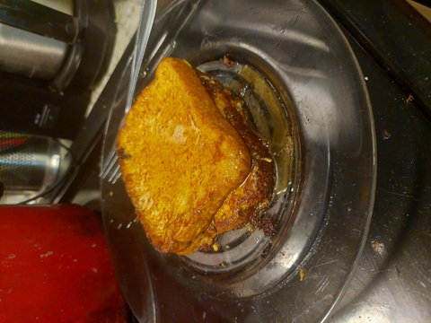

Odin Recipes
French Toast Recipe

French Toast Recipe
Made with eggs, milk and bread. And place on the stove.
Ingredients
- bread
- egg
- milk
- spice
- salt
- butter
Steps
- Whisk milk, egg, spice, salt together
- Butter skillet over medium-high heat
- Dunk bread in egg mixture on both side
- Place on skillet for 4 minutes each side until golden
- Serve hot